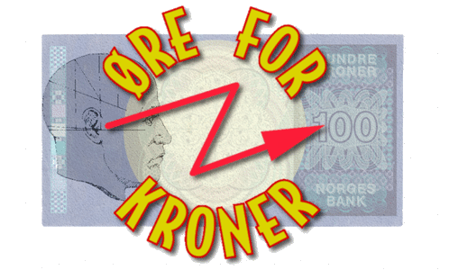
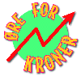

Velkommen til
Øre for Kroner
Neste program vises 6. desember kl. 21.35.
|
 |
|
|
Personlig økonomi Bakgrunnsstoff fra temaer som er tatt opp i Øre for Kroner. |
Best på børs Informasjon om konkurransen og bakgrunnstoff om aksjer på Oslo Børs. |
|
Øre for Kroner er en programserie i NRK Fjernsynet om personlig økonomi hvor seere får tips om hvordan de kan få mer ut av pengene sine.
|